こーどねーむ「ホンコン」 with Arduino
更新日時：2016/3/22
Arduinoを使ったスーパーファミコンとファミコンの吸い出し機を自作するための回路図とプログラムを公開します。
以前インターネットで公開していた"こーどねーむ「ホンコン」"という吸い出し機ではプリンタポートを使用していましたが、USB経由で吸い出せます。
以前のこーどねーむ「ホンコン」とプログラムの互換性はありません。
なお、このホームページは作者の気まぐれで予告なく閉鎖することもあります。

『こーどねーむ「ホンコン」 with Arduino』はクリエイティブ・コモンズ 表示 - 非営利 4.0 国際 ライセンスで提供されています。
営利目的でなければ、回路図、プログラムを自由に利用していただいてかまいません。
コピーライトを表示(オリジナルの著作権が「たにやま」にあることと本ページのURLを記載)いただければ改良したものを公開できます。
改良した回路図、ソースコードを開示する必要はありません。


作成方法
- 下記の回路図を元にArduinoに接続する基板を作成します。
- Arduino IDEを使用して、下記のリンクからダウンロードしたスケッチをArduinoに書き込みます。
使用方法
- 作成した基板とArduinoを接続します。
- スーパーファミコンのカートリッジをカードエッジコネクタに差し込みます。
(ファミコンの吸い出しは、ファミコン用のカードエッジコネクタにファミコンのカートリッジを差し込みます。)
- Windows PCとArduinoをUSBケーブルで接続します。
- 下記のリンクからダウンロードしたプログラム(WinHongKongArduino)を使用してROMイメージを吸い出します。
(ファミコンの吸い出しは、ファミコン用プログラム(WinHongKongFCArduino)をダウンロードして使用します。)
回路図
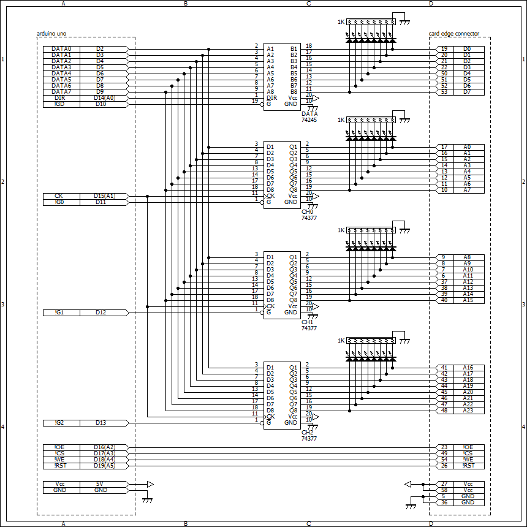
BSch3V用のファイル
カードエッジコネクタのピン番号は、カートリッジ前面が5番から27番、背面が36番から58番です。
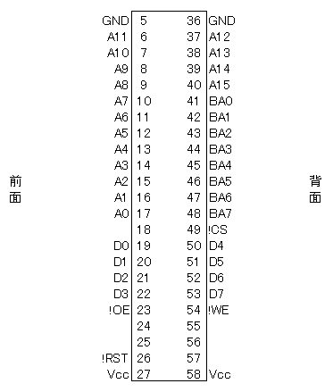
ファミコン用拡張
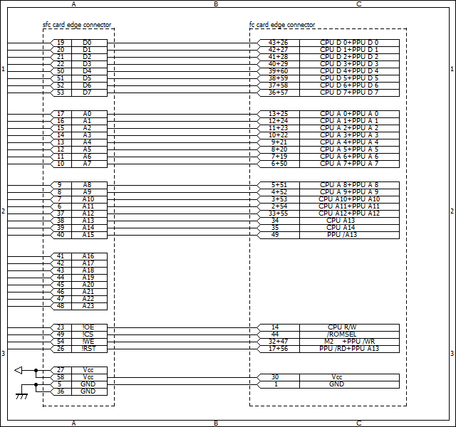
スーパーファミコンのみでよい場合は、作成不要です。
スーパーファミコン用のカードエッジコネクタからファミコン用カードエッジコネクタに配線します。
「+」は両方のピンに結線するという意味です。
ファミコンのカートリッジは、前面が1番から30番、背面が31番から60番です。
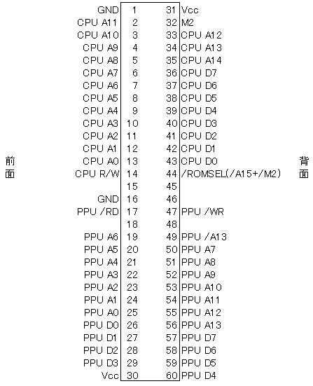
部品表
- Arduino Uno
- ユニバーサル基板
- 2.54mmピッチカードエッジコネクタ(片側23ピン以上)
- 74245
- 74377×3個
- パスコン(0.1μF)×4個
- LED×32個 ※LEDはなくても可
- 8素子9ピン集合抵抗(1KΩ)×4個 ※LEDを付けない場合は不要
- Arduinoに接続するコネクタ(オス) 合計20ピン
- 配線材(スズメッキ線、耐熱電子ワイヤーなど)
ファミコン用拡張
- 2.54mmピッチカードエッジコネクタ(片側30ピン以上)
部品はすべて秋葉原の千石電商で入手可能です。
74シリーズICは、HCで作成しましたが、LSでも可能だと思います。
カードエッジコネクタは、ピン数がちょうどのものは入手が困難なため、必要なピン数以上のものを切断して使用しました。
Arduinoスケッチ
ダウンロード
Arduino IDEを使用して、Arduinoにスケッチを書き込みます。
スーパーファミコン用とファミコン用で共通です。
プログラム(WinHongKongArduino)
ダウンロード
ソースコード(GitHub)
実行には、.NET Framework 4.5が必要です。
使い方
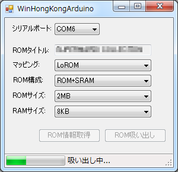
- ArduinoをPCに接続してからWinHongKongArduino.exeを起動します。
- シリアルポートがArduinoが接続されているポートになっていることを確認します。
- [ROM情報取得]ボタンをクリックします。
- ROMタイトル、マッピング、ROM構成、ROMサイズ、RAMサイズが正しく取得できていることを確認します。
正しく取得できない場合は、回路が誤っているか、対応できていないカートリッジ(特殊チップ搭載)である可能性があります。
- [ROM吸い出し]ボタンをクリックします。
- ファイルの保存先を入力して、[保存]ボタンをクリックします。
- ROM吸い出しが完了するまで待ちます。
- 吸い出しが完了すると、ステータスバーに"吸い出し完了"と表示されます。
ファミコン用拡張プログラム(WinHongKongFCArduino)
ダウンロード
ソースコード(GitHub)
対応カートリッジ
特殊チップを搭載しているカートリッジには対応していません。それ以外でも吸い出せる保証はありません。
ファミコン用プログラムは、対応しているカートリッジはマッパー0(PRG-ROM 32KB+CHR-ROM 8KB)のみです。
プログラムのソースコードは公開しているので、各自で改良してください。回路の修正なしで対応カートリッジを増やせると思います。
製作例
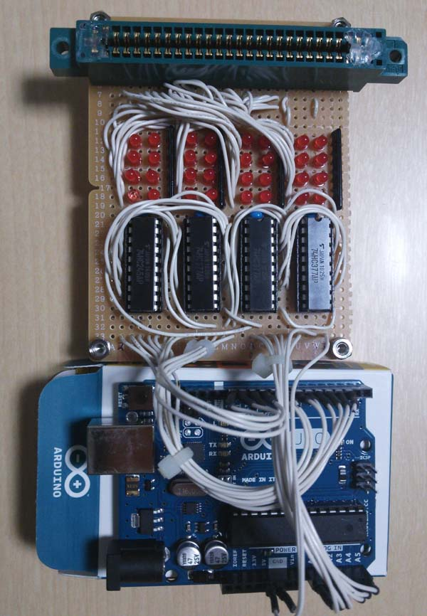 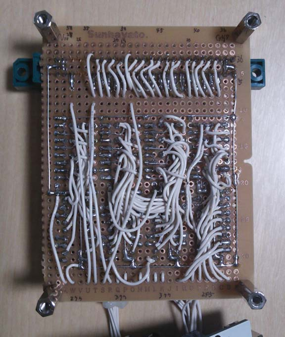 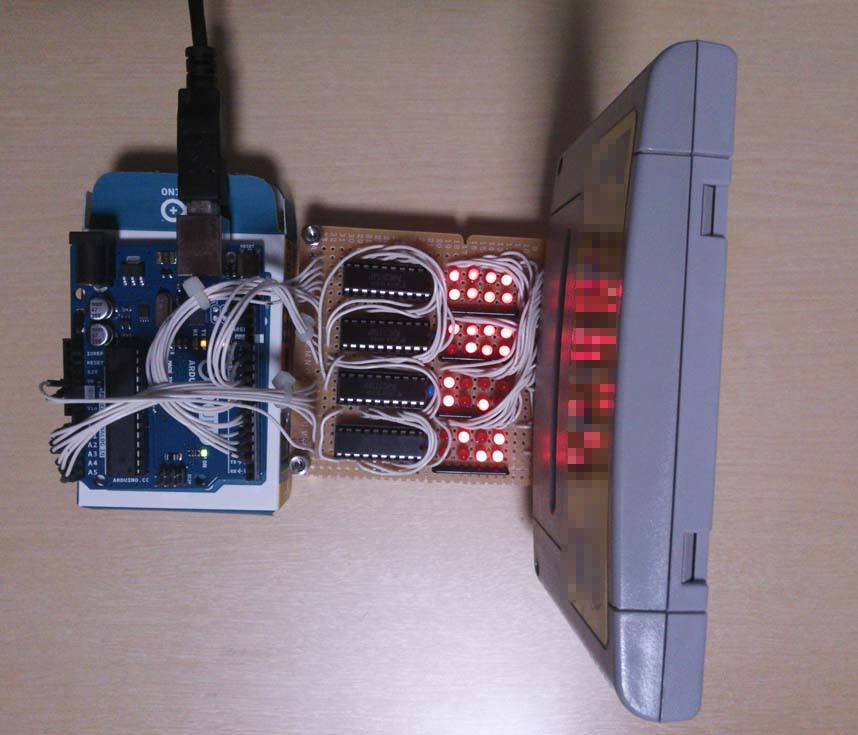
プログラムのデバッグのためにLEDを付けて製作しています。LEDを付けなければ、Arduinoのシールド基板でも作成できると思います。74377を3段重ねにして空中配線すれば配線が減ってよいかもしれません。
ファミコン用拡張
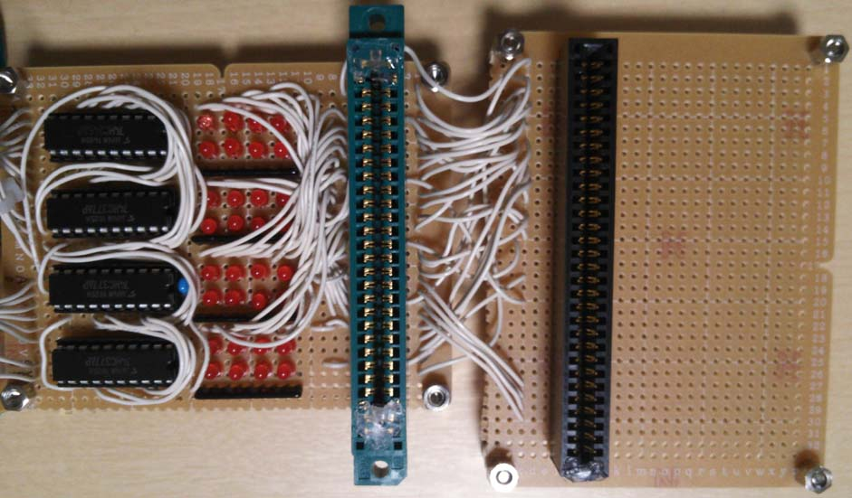 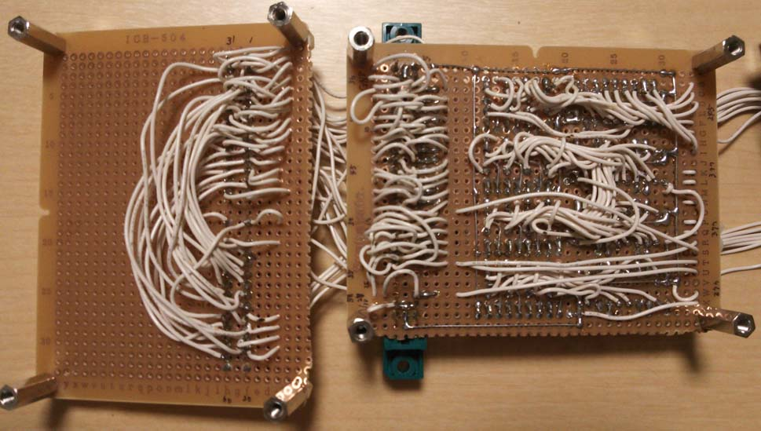 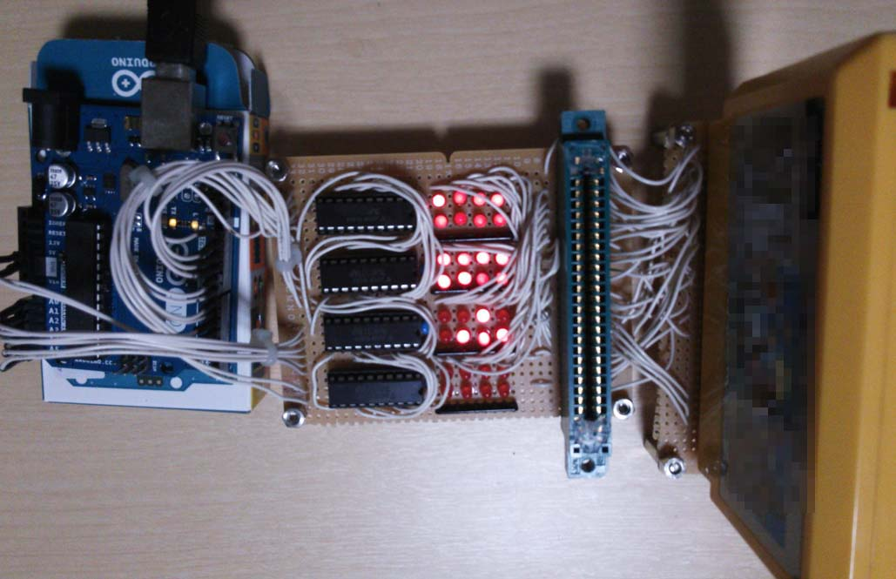
掲示板
回路、プログラムに関する質問・意見はメールで承ります。
免責事項
このページで公開している回路、プログラム等を使用して発生した結果については、作者は一切責任を負えないため全て自己責任でおねがいします。
あとがき
USB接続のこーどねーむ「ホンコン」を以前から作りたいと思っていましたが、USB接続の機器の作成は素人にはハードルが高く断念していました。しかし、最近になってArduinoという簡単にUSBが扱えるマイコンが登場したことで、練習がてらにこーどねーむ「ホンコン」のUSB版を作成してみることにしました。以前のこーどねーむ「ホンコン」では、プリンタポートのピン数不足を補うため、74138を使用していましたが、Arduinoではシリアル接続の2本を除いても20本も自由に使えるピンがあるため、余分なICを省いてシンプルな回路で作成することができました。また、Arduinoはマイコンのプログラム作成、書き込みを本当に簡単に行うことができるので、ほとんど苦労することなく完成できました。Arduinoはコネクタでの接続になっているので、他の用途でも使用できます。電子工作に興味のある方はぜひ作成してみてください。（ハンドルネームは変えていますが作者は初代の設計者です。ホームページ閉鎖時にコンテンツを譲渡しましたが、その後は関わっていません。）[2014/8/13 たにやま]
更新履歴
- 2016/2/14 以前のホームページの内容を追加
- 2016/2/4 ライセンスを表示
- 2014/8/18 ファミコン用拡張を追加
- 2014/8/13 初公開
たにやま

![Arduinoをはじめよう第3版 [ マッシモ・バンジ ]](http://hbb.afl.rakuten.co.jp/hgb/?pc=http%3a%2f%2fthumbnail.image.rakuten.co.jp%2f%400_mall%2fbook%2fcabinet%2f7331%2f9784873117331.jpg%3f_ex%3d128x128&m=http%3a%2f%2fthumbnail.image.rakuten.co.jp%2f%400_mall%2fbook%2fcabinet%2f7331%2f9784873117331.jpg%3f_ex%3d80x80)